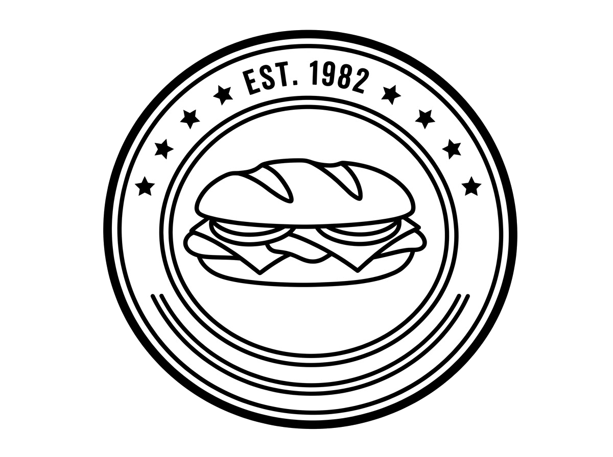
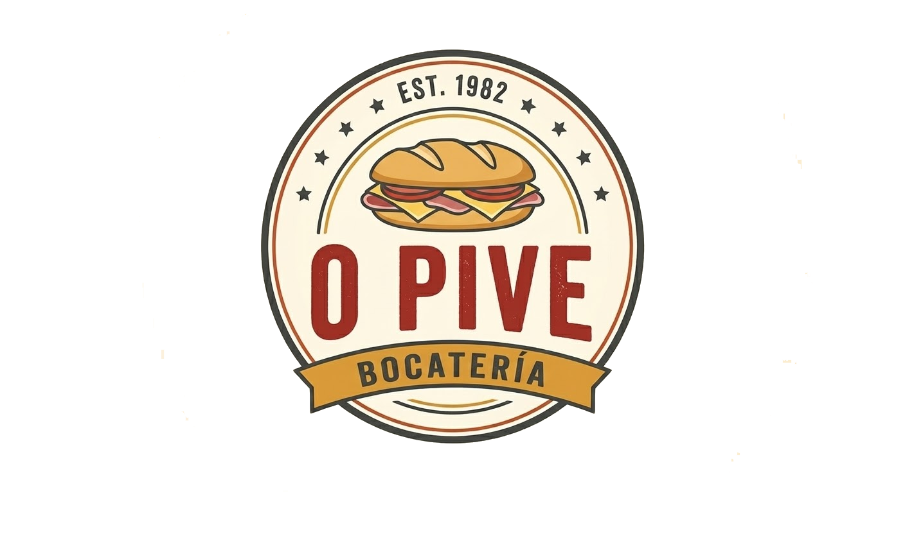

Foto · Patacas bravas
Patacas bravas
3,50 €Patacas e a nosa salsa brava.

O Pive
Dende 1982
Bocadillos tradicionais dende 1982. Comida casera e unha mesa na que sempre es benvido.
PAN DE VERDADE. SABOR DA CASA. · Feitos ao momento
Coñécenos · A nosa historia
En 1982, abrimos O Pive cunha idea sencilla: dar ben de comer e facer sentir a cada cliente coma se estivera na súa casa. Así comezou esta historia, entre bocadillos, contos na barra e o ir e vir dos clientes.
Hoxe seguimos co mismo espíritu. Comida de sempre, ingredientes sinxelos e o bó trato que nos identifica.
DENDE 1982
A nosa carta
Para os de sempre e para os que chegan por primeira vez. Escolle o teu favorito, non te vas arrepentir.
Patacas e a nosa salsa brava.
Selección de xamón, chourizo e salchichón, con pan para compartir.
Chipiróns fritos e salsa alioli en pan de barra.
Pechuga de polo á plancha, leituga, tomate e mayonesa en pan de barra.
Xamón curado e queixo fundido, cun toque de aceite de oliva, en pan de baguette.
Tortilla de pataca e cebola, en pan de bola.
Pepito de ternera á plancha, cebola, pimento e queixo en pan de barra.
Flan de ovo feito na casa, con caramelo e nata.
Tarta de queixo cremosa, feita ó forno, con base de galleta.
Pictogramas orientativos: confirma receitas e trazas co persoal. Non se representa o gluten, presente no pan convencional e que tamén pode estar noutros ingredientes. O pan sen gluten non garante ausencia de contaminación cruzada.
Contacto · Aquí tes a túa mesa
Para preguntas, reservas ou outros motivos.
981 880 740
| Luns a venres | 6:30 – 2:00 |
|---|---|
| Sábados | 6:30 – 00:00 |
Localización orientativa.
Formulario de mostra. Non envía mensaxes.